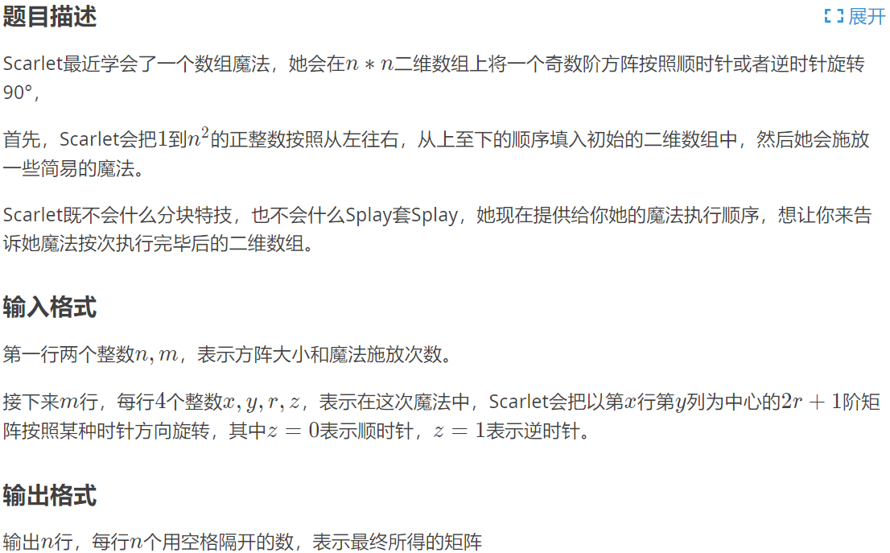

新年的第一发水题 qwqq
# 矩阵的旋转
说到矩阵旋转，大部分人可能会直接旋转
但在计算机中，直接按照旋转的规则来旋转矩阵元素是一件很麻烦的事இ௰இ
所以我们考虑用矩阵的基本操作代替直接旋转ヾ (・ω・`) o
矩阵的旋转可以分为两个基本步骤
- 按主对角线翻转
- 横向或纵向轴对称
对于任意一个矩阵:
我们先将其按主对角线翻转变为:
顺时针则做横向对称得到: \begin{bmatrix} 7 & 4 & 1 \\ 8 & 5 & 2 \\ 9 & 6 & 3 \\ \end
逆时针则做纵向对称得到: \begin{bmatrix} 3 & 6 & 9 \\ 2 & 5 & 8 \\ 1 & 4 & 7 \\ \end
## 例题
洛谷：P4924 [1007] 魔法少女小 Scarlet


AC 代码:
#include<iostream>
#include<cstdio>
#include<vector>
#include<string>
#include<cctype>
using namespace std;
const int maxn = 500;
void showmap(int n, int a[][maxn])
{
for (int i = 0; i < n; i++) {
printf("%d", a[i][0]);
for (int j = 1; j < n; j++)
printf(" %d", a[i][j]);
printf("\n");
}
}
int main()
{
int a[maxn][maxn] = { 0 };
int n, m;
cin >> n >> m;
for (int i = 0; i < n * n; i++)
a[i / n][i % n] = i + 1;
for (int v = 1; v <= m; v++)
{
int x, y, r, z;
cin >> x >> y >> r >> z;//z0顺,z1逆
x -= 1, y -= 1;//转换为数组下标
//按主对角线翻转
for (int i = x - r; i <= x + r; i++)
for (int j = y - r; j < y + i - x; j++)//这个地方的标我改了好久qwqq
{
int z1 = x - i, z2 = y - j;
int temp = a[i][j];
a[i][j] = a[x - z2][y - z1];
a[x - z2][y - z1] = temp;
}
//showmap(n, a);
if (z == 0)//顺时针左右对称
{
for (int j = y - r; j < y; j++)
for (int i = x - r; i <= x + r; i++)
{
int temp = a[i][j];
a[i][j] = a[i][2*y - j];
a[i][2 * y - j] = temp;
}
}
else
{//逆时针上下对称
for (int i = x - r; i < x; i++)
for (int j = y - r; j <= y + r; j++)
{
int temp = a[i][j];
a[i][j] = a[2 * x - i][j];
a[2 * x - i][j] = temp;
}
}
//showmap(n, a);
}
showmap(n, a);
return 0;
}